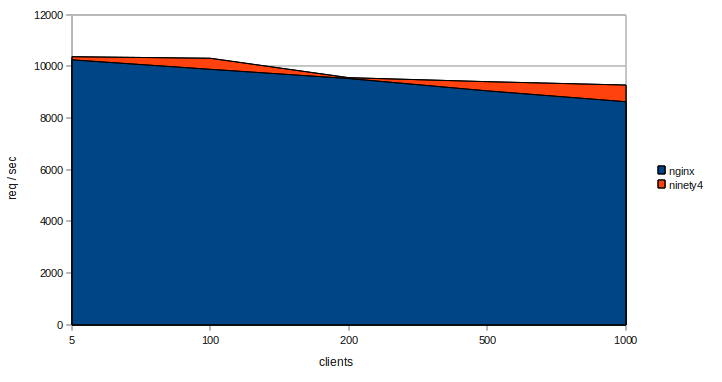

Benchmarks
Here is a benchmark between nginx and Shortfin made by Apache Benchmark tool:
Requests / second

The test was made on an old laptop running Ubuntu Desktop 10.10 with 3.9 Gb RAM and a 2 GHz processor with 2 cores.
The requested file was a 169 byte HTML-file.